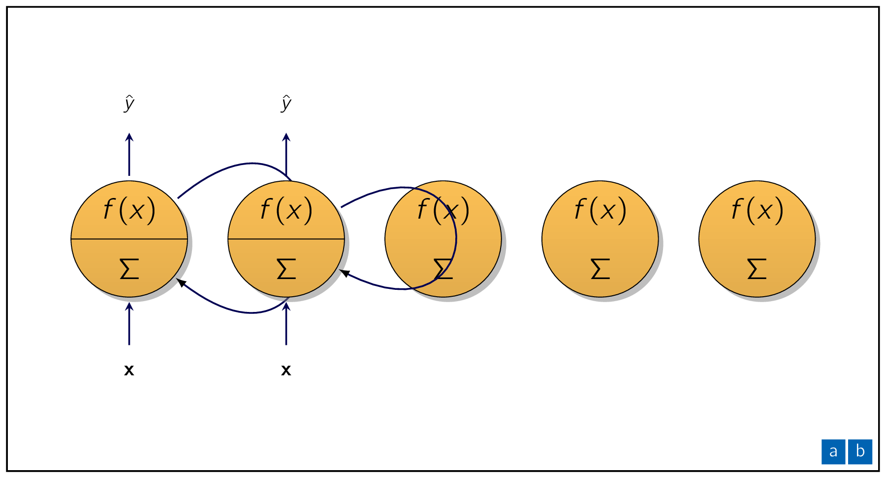
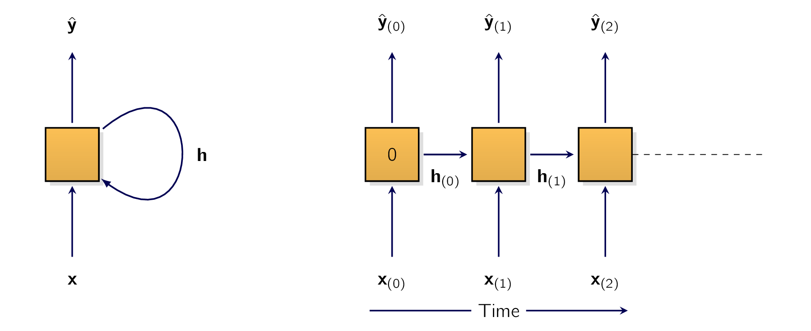
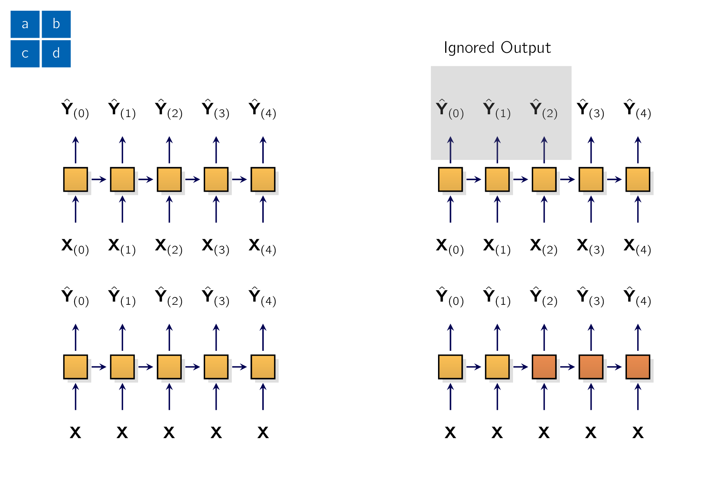

Till now we have focused on FFNNFeed-forward neural networkFeed-forward neural networks, where the activations flow only in one direction, which is from the input layer to the output layer.
A RNNRecurrent Neural Networksa type of ANN designed to process sequential data, such as text, speech, or time series, by passing information through loops from one step to the next looks very much like a FFNNFeed-forward neural networkFeed-forward neural network neural network, except it also has connections pointing backward.
Lets look at the simplest possible RNNRecurrent Neural Networksa type of ANN designed to process sequential data, such as text, speech, or time series, by passing information through loops from one step to the next:
(see Figure 13-1, left). At each time step , which is also called a frame, this recurrent neuron receives the inputs as well as its own output from the previous time step, . Given there is no previous output at the first time step, it is generally set to zero. We can represent this tiny network against the time axis (see Figure 13-1, right).
This is called unrolling the network through time. [187] It’s the same recurrent neuron represented once per time step.

We can easily create a layer of recurrent neurons. At each time step , every neuron receives both the input vector and the output vector from the previous time step , as shown in Figure 13-2.
Both the inputs and outputs are now vectors. [188] when there was just a single neuron, the output was a scalar.
Each recurrent neuron has two (2) sets of weights:
-
one for the inputs , and
-
the other for the outputs of the previous time step, .
Lets call these weight vectors and .
If we consider the whole recurrent layer instead of just one recurrent neuron, we can place all the weight vectors in two (2) weight matrices:
The output vector of the whole recurrent layer can then be computed pretty much as one might expect, as shown in Eq. (4.1) , where is the bias vector and is the activation function, such as ReLU. [189] Many researchers prefer to use the hyperbolic tangent (tanh) activation function in RNNRecurrent Neural Networksa type of ANN designed to process sequential data, such as text, speech, or time series, by passing information through loops from one step to the nexts rather than the ReLU activation function [†-1] Pham, V. T. D. et al. Dropout Improves Recurrent Neural Networks for Handwriting Recognition. 2014 14th International Conference on Frontiers in Handwriting Recognition, 285–290 (2013), however ReLU-based RNNRecurrent Neural Networksa type of ANN designed to process sequential data, such as text, speech, or time series, by passing information through loops from one step to the nexts are also possible [†-2] Le, Q. V., Jaitly, N. & Hinton, G. E. A Simple Way to Initialize Recurrent Networks of Rectified Linear Units. ArXiv abs/1504.00941 (2015).
| (4.1) |
Similar to FFNNFeed-forward neural networkFeed-forward neural network, we can compute a recurrent layer’s output in one shot for an entire mini-batch by placing all the inputs at time step into an input matrix :
| (4.2) |
In this equation:
-
is an matrix containing the layers outputs at time step for each instance in the mini-batch. Here is the number of instances in the mini-batch, and is the number of neurons.
-
is an matrix containing the inputs for all instances. Here is the number of input features.
-
is an ninputs Πnneurons matrix containing the connection weights for the inputs of the current time step.
-
is an nneurons Πnneurons matrix containing the connection weights for the outputs of the previous time step.
-
is a vector of size nneurons containing each neurons bias term.
-
The weight matrices Wx and W are often concatenated vertically into a single weight matrix W of shape (ninputs + nneurons) Πnneurons (see the second line of Equation 13-2).
-
The notation represents the horizontal concatenation of the matrices X(t) and (t1).
Please observe that is a function of and , which is a function of and , which is a function of and , and so on. This makes a function of all the inputs since time = 0. [190] That is, , , , . At the first time step, , there are no previous outputs, so they are typically assumed to be all zeros.
- ¶
- Information 4.43: Origins of RNN
-
The idea of introducing backward connections [191] basically the use of loops. in ANNArtificial Neural NetworksArtificial Neural Networks dates back to the very origins of ANNArtificial Neural NetworksArtificial Neural Networkss, but the first modern RNNRecurrent Neural Networksa type of ANN designed to process sequential data, such as text, speech, or time series, by passing information through loops from one step to the next architecture was proposed in [†-3] Jordan, M. I. Attractor dynamics and parallelism in a connectionist sequential machine in (1990). At each time step, his RNNRecurrent Neural Networksa type of ANN designed to process sequential data, such as text, speech, or time series, by passing information through loops from one step to the next would look at the inputs for that time step, plus its own outputs from the previous time step. This is called output feedback.
Since the output of a recurrent neuron at time step is a function of all the inputs from previous time steps, we could say it has a form of memory.
A part of a NNNeural NetworksNeural Networks that preserves some state across time steps is called a memory cell. [192] or just simply a cell. A single recurrent neuron, or a layer of RNNRecurrent Neural Networksa type of ANN designed to process sequential data, such as text, speech, or time series, by passing information through loops from one step to the nexts, is a very basic cell, capable of learning only short patterns. [193] typically about 10 steps long, but this varies depending on the task. Later in this chapter, we will look at some more complex and powerful types of cells capable of learning longer patterns. [194] Roughly 10 times longer, but again, this depends on the task.
A cells state at time step , denoted , where stands for hidden, is a function of some inputs at that time step and its state at the previous time step:
Its output at time step , denoted , is also a function of the previous state and the current inputs, and typically its just a function of the current state. In the case of the basic cells we have discussed so far, the output is just equal to the state, but in more complex cells this is not always the case, as shown in Figure 13-3.

- ¶
- Information 4.44: First RNNs
-
The first modern RNNRecurrent Neural Networksa type of ANN designed to process sequential data, such as text, speech, or time series, by passing information through loops from one step to the next which fed back the hidden state rather than the outputs was proposed in [†-4] Elman, J. L. Finding Structure in Time. Cogn. Sci. 14, 179–211 (1990). This is called state feedback, and its the most common approach today.
A RNNRecurrent Neural Networksa type of ANN designed to process sequential data, such as text, speech, or time series, by passing information through loops from one step to the next can simultaneously take a sequence of inputs and produce a sequence of outputs (see the top-left network in Figure 13-4). This type of sequence-to-sequence network is useful to forecast time series, such as our homes daily power consumption: we feed it the data over the last N days, and we train it to output the power consumption shifted by one day into the future (i.e., from N 1 days ago to tomorrow). Alternatively, we could feed the network a sequence of inputs and ignore all outputs except for the last one. This is a sequence-to-vector network.
[hate] to 1
[love] ). Conversely, we could feed the network the same input vector over and over again at each time step and let it output a sequence. This is a vector-to-sequence network.

Lastly, we could have a sequence-to-vector network, called an encoder, followed by a vector-to-sequence network, called a decoder.
For example, this could be used for translating a sentence from one language to another. We would feed the network a sentence in one language, the encoder would convert this sentence into a single vector representation, and then the decoder would decode this vector into a sentence in another language. This two-step model, called an encoder-decoder,4 works much better than trying to translate on the fly with a single sequence-to-sequence RNNRecurrent Neural Networksa type of ANN designed to process sequential data, such as text, speech, or time series, by passing information through loops from one step to the next (like the one represented at the top left): the last words of a sentence can affect the first words of the translation, so we need to wait until we have seen the whole sentence before translating it. We will go through the implementation of an encoder-decoder in Chapter 14 (as we will see, it is a bit more complex than what Figure 13-4 suggests). This versatility sounds promising, but how do we train a RNNRecurrent Neural Networksa type of ANN designed to process sequential data, such as text, speech, or time series, by passing information through loops from one step to the next?
To train an RNNRecurrent Neural Networksa type of ANN designed to process sequential data, such as text, speech, or time series, by passing information through loops from one step to the next, the trick is to unroll it through time, and then use regular backpropagation (see Figure 13-5).
This strategy is called backpropagation through time (BPTT) [†-5] Mozer, M. C. A Focused Backpropagation Algorithm for Temporal Pattern Recognition. Complex Syst. 3 (1989).
Similar to backpropagation, there is a first forward pass through the unrolled network, represented by the dashed arrows. Then the output sequence is evaluated using a loss function
where is the target, is the prediction, and is the max time step.
Note that this loss function may ignore some outputs.
For example, in a sequence-to-vector RNNRecurrent Neural Networksa type of ANN designed to process sequential data, such as text, speech, or time series, by passing information through loops from one step to the next, all outputs are ignored except for the very last one. In Figure 13-5, the loss function is computed based on the last three outputs only. The gradients of that loss function are then propagated backward through the unrolled network (represented by the solid arrows). In this example, since the outputs and are not used to compute the loss, the gradients do not flow backward through them;
Moreover, since the same parameters and are used at each time step, their gradients will be tweaked multiple times during backprop. Once the backward phase is complete and all the gradients have been computed, BPTT can perform a gradient descent step to update the parameters.
This is no different from regular backprop.
Fortunately for us, PyTorch takes care of all of this complexity, as we will shortly see. But before we get there, let’s load a time series and start analyzing it using classical tools to better understand what we’re dealing with, and to get some baseline metrics.
-
¶
- NNNeural Networks
Neural Networks
-
¶
- ANNArtificial Neural Networks
Artificial Neural Networks
-
¶
- RNNRecurrent Neural Networks
a type of ANN designed to process sequential data, such as text, speech, or time series, by passing information through loops from one step to the next
-
¶
- FFNNFeed-forward neural network
Feed-forward neural network
- 1.
- Pham, V. T. D. et al. Dropout Improves Recurrent Neural Networks for Handwriting Recognition. 2014 14th International Conference on Frontiers in Handwriting Recognition, 285–290 (2013)
- 2.
- Le, Q. V., Jaitly, N. & Hinton, G. E. A Simple Way to Initialize Recurrent Networks of Rectified Linear Units. ArXiv abs/1504.00941 (2015)
- 3.
- Jordan, M. I. Attractor dynamics and parallelism in a connectionist sequential machine in (1990)
- 4.
- Elman, J. L. Finding Structure in Time. Cogn. Sci. 14, 179–211 (1990)
- 5.
- Mozer, M. C. A Focused Backpropagation Algorithm for Temporal Pattern Recognition. Complex Syst. 3 (1989)
- [187].
- It’s the same recurrent neuron represented once per time step.
- [188].
- when there was just a single neuron, the output was a scalar.
- [189].
- Many researchers prefer to use the hyperbolic tangent (tanh) activation function in RNNRecurrent Neural Networksa type of ANN designed to process sequential data, such as text, speech, or time series, by passing information through loops from one step to the nexts rather than the ReLU activation function [†-1] Pham, V. T. D. et al. Dropout Improves Recurrent Neural Networks for Handwriting Recognition. 2014 14th International Conference on Frontiers in Handwriting Recognition, 285–290 (2013), however ReLU-based RNNRecurrent Neural Networksa type of ANN designed to process sequential data, such as text, speech, or time series, by passing information through loops from one step to the nexts are also possible [†-2] Le, Q. V., Jaitly, N. & Hinton, G. E. A Simple Way to Initialize Recurrent Networks of Rectified Linear Units. ArXiv abs/1504.00941 (2015).
- [190].
- That is, , , , .
- [191].
- basically the use of loops.
- [192].
- or just simply a cell.
- [193].
- typically about 10 steps long, but this varies depending on the task.
- [194].
- Roughly 10 times longer, but again, this depends on the task.